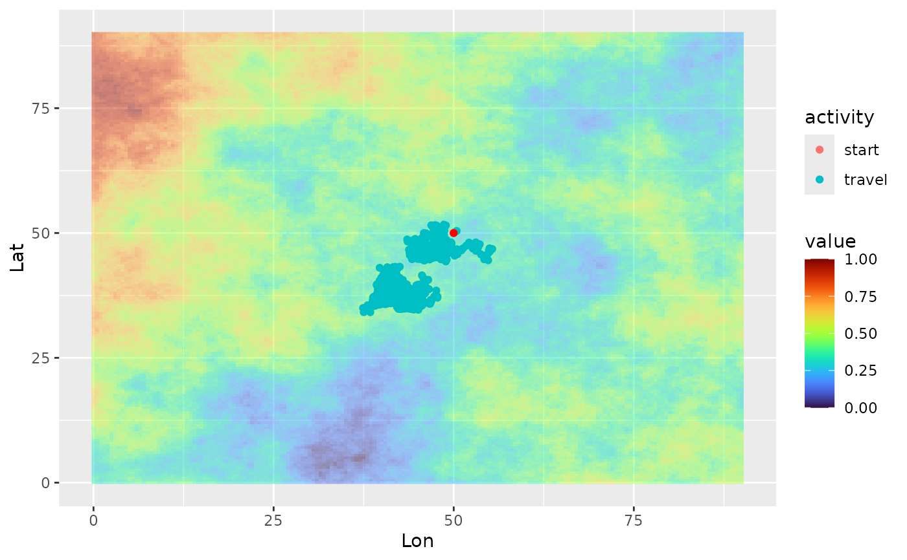
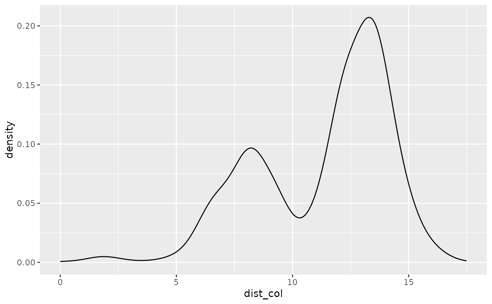
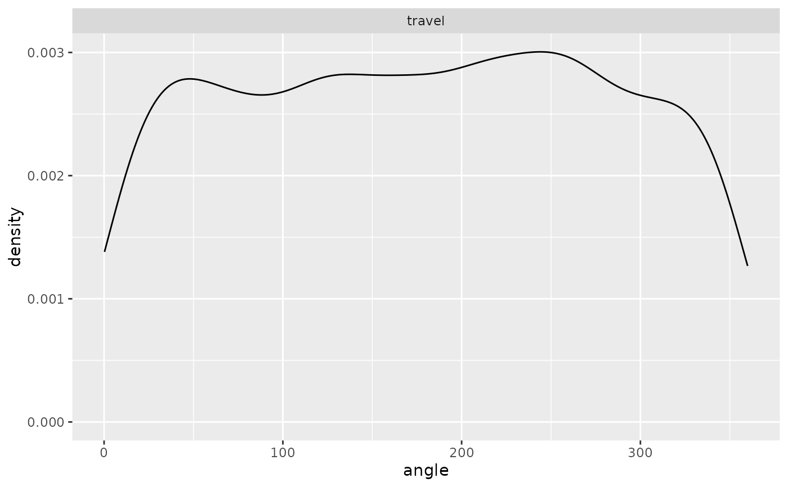

Simulate individual trajectory
simulate_trajectory_FR.RdSimulate the trajectory of a free ranging individual, over a given time period. The function works similarly as simulate_trajectory_CPF but the individual is not restrained around a colony and does not perform homing bout. Here, potential_position_func() considers the initial position as the colony, so that the dist_col field in the output corresponds to the distance to this starting point. The individual starts selecting its next positions based on environmental conditions (checking for residence time) at the third step (against 5th step for central-place foragers).
Usage
simulate_trajectory_FR(
initial_position,
resource_layer,
starting_hour,
starting_bearing = c(90, 10),
starting_step = c(4.5, 3),
travel_bearing = c(0, 20),
travel_step = c(3, 3),
foraging_bearing = c(0, 0.5),
foraging_step = c(1, 3),
minx = 0,
maxx = 90,
miny = 0,
maxy = 90,
step_duration = 1,
activity_threshold = 0.5,
max_duration = 720,
residence_radius = NULL,
residence_time = NULL
)Arguments
- initial_position
data.frame containing the coordinates of the point the individual starts from (Lon, Lat fields)
- resource_layer
SpatRaster of the resource layer
- starting_hour
Starting hour
- starting_bearing
Bearing when departing the colony (mu, kappa)
- starting_step
Step length when departing the colony (mu, kappa)
- travel_bearing
Bearing from previous step when traveling (mu, kappa)
- travel_step
Distance from previous step when traveling (scale, rate)
- foraging_bearing
Bearing from previous step when foraging/searching (mu, kappa)
- foraging_step
Distance from previous step when foraging (scale, rate)
- minx
Minimum longitude of the bounding box to simulate trajectory within
- maxx
Maximum longitude of the bounding box to simulate trajectory within
- miny
Minimum latitude of the bounding box to simulate trajectory within
- maxy
Maximum latitude of the bounding box to simulate trajectory within
- step_duration
Duration of a step length, in minutes (defaults 1), defines the sampling interval
- activity_threshold
Threshold environmental value defining when an individual switches from travelling to foraging movement
- max_duration
Total duration of a full trip, in minutes (defaults to 720, 12h)
- residence_radius
The distance at which testing for residence time (in system unit). This value is used to draw a radius around each position to evaluate the residence time. If one of
residence_radiusandresidence_timeis NULL (both, by default), no residence time constraint is applied.- residence_time
The time an animal is allowed to spend in a same area (residence time). Expressed in number of steps (take care to provide a number of step consistent with
step_duration). If one ofresidence_radiusandresidence_timeis NULL (both, by default), no residence time constraint is applied.
See also
Other individual movement functions:
potential_position_func(),
randomdir(),
randomdist(),
simulate_trajectory_CPF()
Examples
library(ggplot2)
library(viridis)
library(tidyterra)
library(lubridate)
colony_location <- data.frame(Lon = 50, Lat = 50)
cdt <- generate_env_layer(grid = create_grid(), n = 1, seed = 4)
#> [using unconditional Gaussian simulation]
single_traj <- simulate_trajectory_FR(initial_position = colony_location,
resource_layer = cdt$rasters,
starting_hour = ymd_hms("2022-08-02 06:00:00"),
starting_bearing = c(90,10),
starting_step = c(4.5, 3),
travel_bearing = c(0, 20),
travel_step = c(3, 3),
foraging_bearing = c(0, 0.5),
foraging_step = c(1, 3),
minx = 0, maxx = 90,
miny = 0, maxy = 90,
step_duration = 1,
activity_threshold = 0.7,
max_duration = 2000,
residence_radius = 1,
residence_time = 20)
# view the trajectory
ggplot(single_traj) +
geom_spatraster(data = cdt$rasters, alpha = 0.5) +
geom_point(aes(x = Lon, y = Lat, color = activity)) +
geom_point(data = colony_location, aes(x = Lon, y = Lat), col = "red") +
scale_fill_viridis(option = "H")

# look at the density distribution of distance to colony and movement parameters
ggplot(single_traj) + geom_density(aes(x = dist_col))

ggplot(single_traj |> subset(activity %in% c("forage", "travel"))) +
geom_density(aes(x = angle)) + facet_wrap("activity")

ggplot(single_traj |> subset(activity %in% c("forage", "travel"))) +
geom_density(aes(x = step)) + facet_wrap("activity")